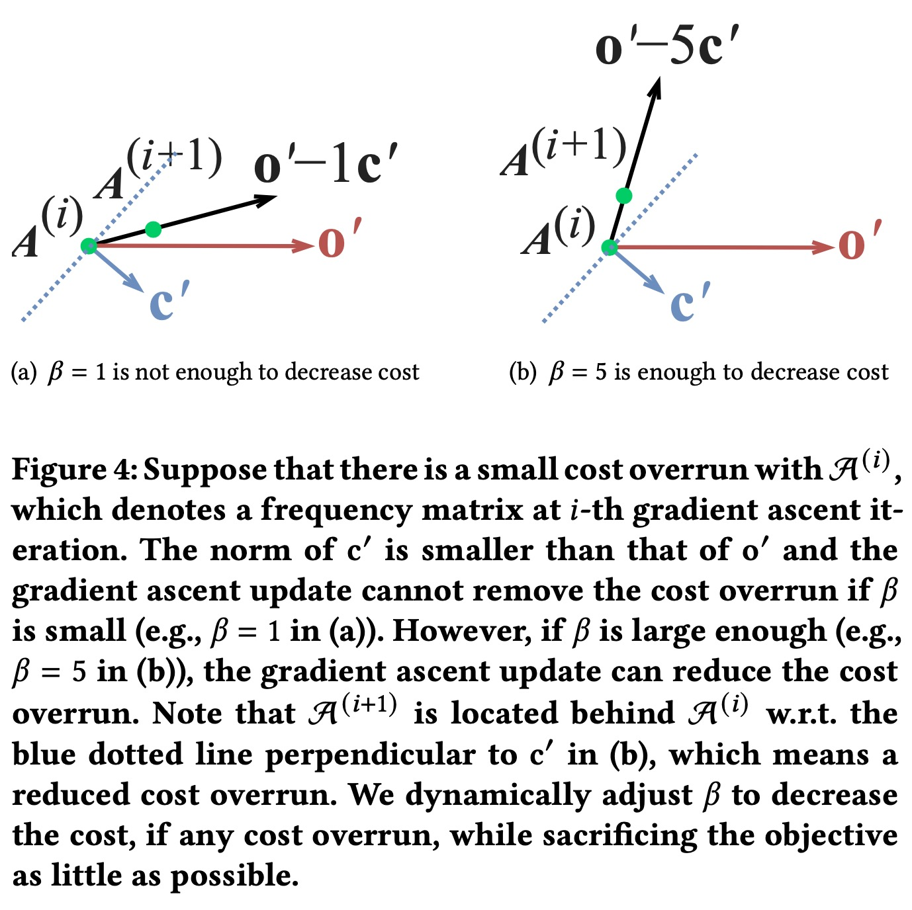

这篇文章是KDD2021的一篇文章，讲的是做航空路线的资源分配的。
我发现自己好像就喜欢看这个类型的文章，偏实际的业务问题+充斥着骚操作的解决方案，对于那种well-defined问题的文章好像看的不是那么多。
最近也被若干老板diss了说写东西逻辑以及表达不好，回看了一下以前写的文章，发现在写东西的时候还是比较随意的，以后尽量按照固定的框架来写，问题背景->解决方法->试验结果->总结，这样一是培养思维习惯，二是能够加深对文章的理解。
问题背景
美国航空行业历史悠久，具有广阔的商业前景，对于优化提升航空业服务质量，之前也存在很多研究，包括预测市场份额、票价、需求，资源的分配等等。本文提出了一种data-driven的方式来最大化航司在航空业的影响力，此处的影响力我们定义为由该航空公司运送的旅客数量，可以用总需求数乘以市场份额得到，所以整个问题变成：
- 如何建立市场份额的预估模型
- 如何利用市场份额的预估模型，在预算约束下最大化航司的影响力
对于第一个问题，传统做法是用一些历史特征来进行预估，比如平均机票价格、航班数量、准点率等等，近年来也有研究人员注意到航司的运输网络连接性也会影响市场份额，所以本文采用NN的预测模型，同时考虑了历史特征以及运输网络结构特征，来构建市场份额的预估模型。
对于第二个问题，因为运力网络结构会影响单条航线的市场份额，即一条航线近邻路线的市场份额会影响该航线的市场份额，这种内在的关联关系使得整个问题比较难建模求解，为了解决这个问题，本文中提出了一种改进的梯度方法，AGA，在实验中能够更快地求解更大规模的问题，同时能够在梯度迭代中保证预算的约束被满足。
解决方法
市场份额预估模型，沿用选择模型的结构，对于线路\(r\)，航司\(C_k\)的市场份额定义为 \[ m_{r,k}=\frac{e^{\sum_j w_{r,j}\cdot{f_{r,k,j}}}}{\sum_i e^{\sum_j w_{r,j}\cdot{f_{r,i,j}}}} = \frac{\exp(\textbf{w}_r\cdot \textbf{f}_{r,k})}{\sum_i \exp(\textbf{w}_r\cdot \textbf{f}_{r,i})} \] 其中\(m_{r,k}\)表示航司\(C_k\)在路线\(r\)的市场份额，\(f_{r,k,j}\)表示航司\(C_k\)在路线\(r\)上的第j维特征，\(w_{r,j}\)为系数，可以理解为市场份额对于某个维度特征的敏感度。
在美国有超过2000条线路，这可以用一个运输网络图来表示\(\mathcal{G=(V,E)}\)来表示，\(\mathcal{G}_k\)是航司\(C_k\)的航班数量分布，\(\mathcal{G}_k\)可以用矩阵\(\mathcal{A}_k\)表示。
网络特征，主要是4个：
- Degree Centrality，度中心性，即一个节点的出度和入度的数量，越高的度中心性表明乘客有更多的选择。
- Ego Network Density，中心网络密度，一个节点和周边近邻节点组成的子网络，用边权重的和处以\(n(n-1)\)表示密度
- PageRank，表明网络的连通性
下图为这三个特征与乘客数量的关系
给定特征后，后面采用一个多层的网络来给出预测值，网络采用残差链接，最后一层是一个logit节点，输出市场份额大小。
以上特征在tensorflow中都可以通过\(\mathcal{A}_k\)快速计算得到，通过频繁修改\(\mathcal{A}_k\)，整个网络可以快速进行预测。
所以梯度可以通过预测模型传导到网络特征，最后到矩阵\(\mathcal{A}_k\)，所以当固定模型系数之后，可以用同一个网络来优化矩阵\(\mathcal{A}_k\)，我们用\(f_{r,k,\text{freq}}\)表示航司\(C_k\)在路线\(r\)上的航班数量，这个特征是优化问题的决策变量。
整个优化问题可以表示为 \[ \begin{aligned} \max_{f^\max_r\geq f_{r,k,\text{freq}\geq 0,r\in\mathcal{R}}} & \sum_{r\in\mathcal{R}} \text{demand}_r \times m_{r,k} \\ \text{s.t.} & \sum_{r\in\mathcal{R}} \text{cost}_{r,k} \times f_{r,k,\text{freq}} \leq \text{budget}_k \end{aligned} \] 其中\(m_{r,k}\)是预测的市场份额，\(\text{deman}_r\)是线路\(r\)的旅客总数，\(\text{cost}_{r,k}\)是航司\(C_k\)在线路\(r\)的单位运营成本，\(f_r^\max\)是最大航班次数。这个问题是一个非线性优化问题，是NP-hard的整数背包问题和资源分配问题的一个特例。整个问题的解决框架可以分成两步：
- 训练市场份额预测模型
- 固定预测模型和其他特征不变，利用AGA算法更新航班频数矩阵\(\mathcal{A}_k\)
由于使用了网络特征，这使得很多经典的组合优化方法并不适合解决这个问题，因为路线间并不独立，同时由于使用的模型是多层的神经网络，所以该问题是高度非线性的，为了解决这个问题以上问题，提出并实现了AGA算法。
问题中需要考虑预算的约束，所以我们设计了两种启发式方法：基于拉格朗日函数（LF）和基于ReLU。在实际中，用clip_by_value函数把航班频数值限制在0到\(f^\max_r\)之间，最终取结果时候向下取整避免预算超出。
\[ 其中$\lambda$被称为拉格朗日乘子，我们用tensorflow来解决这个优化问题 \] {f^rf{r,k,,r}} L+^2 \[ 其中$\delta$是正则化权重，我们的方法跟原始的拉格朗日函数并不一样，内部的最小化是为了避免$\lambda$过大。求解上面式子一个做法是交替最小化，同时它也是一个max-min game，后面我们提出了一个与之等效的优化目标。 \] _{f^rf{r,k,,r}}
o(_k) - $$
基于ReLU的方法，ReLU经常被用来限制神经网络只取正值，这使得我们可以利用这个性质来构建预算约束 $$ _{f^rf{r,k,,r}}
o(_k) - R( c(_k) ) \[ 我们提出的AGA算法会动态调整参数$\beta$来保证预算的约束。用$o'$和$c'$来表示目标和约束的梯度 \] \[\begin{aligned} o' &= \nabla o(\mathcal{A}_k)\\ c' &= \begin{cases} \nabla \frac{c(\mathcal{A}_k)^2}{2} &\text{LF based method} \\ \nabla R(c(\mathcal{A}_k)) & \text{ReLU based method} \\ \end{cases} \end{aligned}\]$$ 
如上图所示，因为约束的梯度太小，不足以降低新的解对于预算约束的违反，此时需要增加\(\beta\)值，降低约束违反程度。梯度\(o'\)会增加市场的影响，\(-\beta c'\)会降低过度使用预算，所以\(\beta\)需要同时降低预算超花同时增加市场影响，即最终的\(o'-\beta c'\)需要大过\(c'\)，即 \[ \begin{aligned} &c'\cdot (o'-\beta c') <0\\ &\beta > \frac{c'\cdot o'}{c'\cdot c'} \end{aligned} \] 注意上式子没有等号，所以\(\beta\)绝对大于右边，我们增加一个正值的超参数 \[ \begin{aligned} \beta = \frac{o'\cdot c'}{c'\cdot c'} +\epsilon \\ \end{aligned} \] 为了保证\(\beta\)在趋于最优时候趋于0，我们采用 \[ \begin{aligned} \beta = \frac{o'\cdot c'}{c'\cdot c'} +c(\mathcal{A}_k)\epsilon \\ \end{aligned} \]
实验结果
离线实验写的很详细，大家可以看原文，美中不足好像没有实际的应用。
总结
总的来说，本文提出了一种解决网络问题的方法，一般在做资源分配问题的时候，往往会将各个变量之间设为独立，这在很多现实问题中都是不符合的，但却由于求解困难的问题而不得不做的假设。在本文的问题中，得益于预测模型特征的构建，能够有将最开始预测问题和后面的求解问题联系起来，并通过AGA算法求解，对于有预算约束的非线性问题十分友好，思路巧妙，个人预测这种做法在后续很多实际问题中都会有所应用。